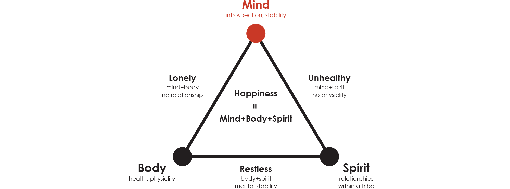
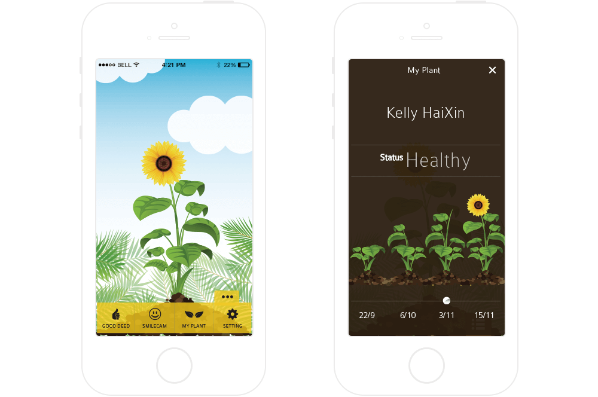
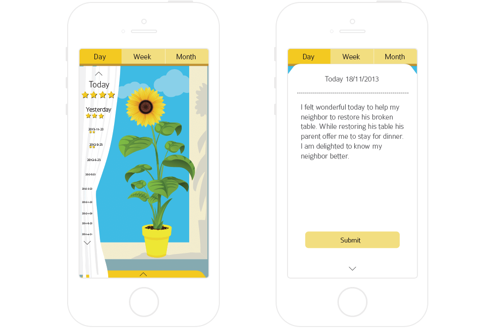
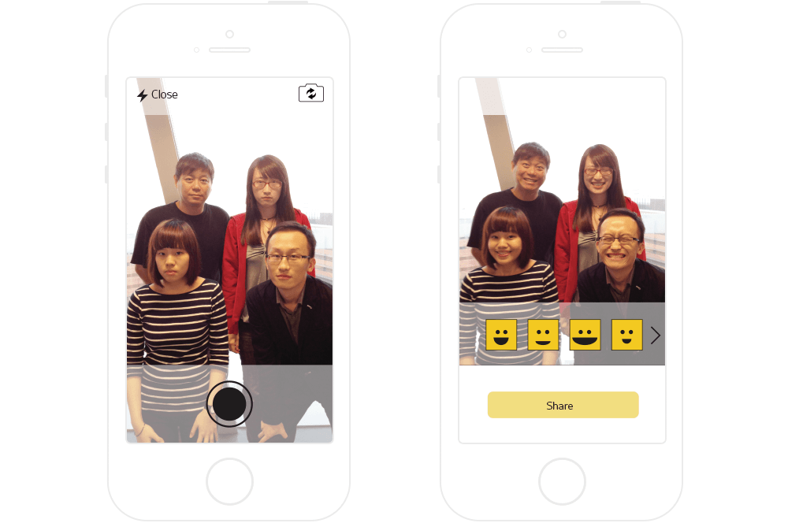
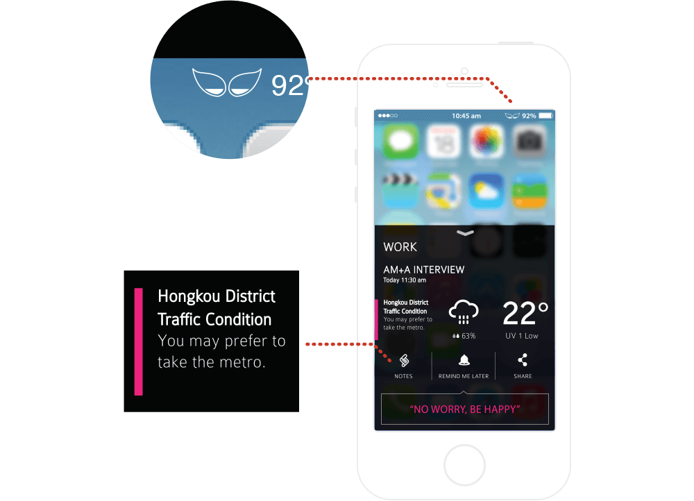

Ways
to be happy
According to scientific research on humans’ emotion, there are several methods that help a person stay positive and live a happier life.
Practicing smiling makes people feel happy while more sleep and more exercises enable people to stay both physically and mentally healthy. Helping others, good deeds and voluntary works give people the sense of self-realization, which will also accumulate happiness. Keeping in touch with families and friends establishes intimacy and emotional attachment between each other.

TRIANGULAR THEORY
OF HAPPINESS
It is believed that body, spirit and mind build up a triangular system. Body and spirit are the foundations of the mind and as long as both of them are well satisfied, a person is able to be stable and strong in mind so that he/she will feel happy toward life.
The idea
Happiness Machine 4.0: ài
ài is a conceptual application for smart phones, which provides intelligent responses and feedbacks to user through capturing user’s emotion and keeping track user’s daily activities using artificial intelligence. There are several function modules, which utilize persuasive design to motivate user through proactive notifications and reactions. The built-in games and functions will be able to generate as well as accumulate happiness helping them achieve contentment mentally.
The logo denotes the Chinese character with the meaning of love. Here we want to deliver the spirit that love is the fountain of happiness.It is believed a person feels happier when he/she is accompanied by the beloved ones. Besides, showing kindness and care to others will also be an enjoyable experience. Furthermore, loving yourself and adopt an optimistic attitude towards life is significant.

ài FEELS YOU
The embedded sensors
Detecting facial expressions of the user through front cam and capturing body surface characteristics through built-in emotion sensors, the app provides visual and tactile effects when the user is unlocking their phone. Try to smile to unlock it! :)
EMOTION PLANT
Cultivate your plant with emotional status
A virtual plant represents the emotional status of the user. It is influenced by the data captured by the emotion sensors. Hence it grows healthier if the user is happy. It is a visual representation of the user’s self, hereby delivers the idea of emotion adjustment and self-caring.
LOG GOOD DEEDS
Accumulate Feelings about self-realization
Doing good deeds makes people feel satisfied and valued, which we consider to be an effective method to create more happiness and stay positive.
SMILE CAM
Create and share happiness
The auto-smile detector will detect those unsmiling faces and replace their lips with the appropriate smiling lips. User also has the option to select their preferred smiling lips. User can share these photos and everyone will be infected for a good laugh.
SMART NOTIFICATIONS
Daily tracking and proactive interactions
By analyzing the user prescheduled appointment type, location, weather, and traffic condition, the AI is able to recommend an appropriate suggestion and a motivational message. User can add notes, choose to remind me later and share the motivational message to others.
Happiness Machine 4.0
Category:
Conceptual Design/Persuasive Design
Experience Design Intelligence
Date:
Dec 2013
Institute/Organization:
Aaron Marcus and Associates, Inc.
MDes Interaction Design, SD, HKPU
In Happy Machine 4.0 design project, the task is to seek a change of the daily behavior for the people living in the China urban city according to our persuasive design strategy, to inspire and boost self-confidence towards the user daily schedules. For the next stage, the project aims to influence and convince the user attitude towards happiness through the persuasive activities. The ultimate objective of this design is to motivate people to achieve deeper and sustainable happiness.
Project Team: Akela LO | Arno Xiaowei HE | Michelle MA | Tommy QUEK
Advisor: Aaron Marcus, President of Aaron Marcus and Associates, Inc. CA, USA
Presented at User Experience Collection UXPA China/User Friendly 2013 Conference
Exhibited at Masterpieces – Selected Master of Design student projects Dec 2013 – Jan 2014 Innovation Gallery, Jockey Club Innovation Tower
Project Archive: Poster